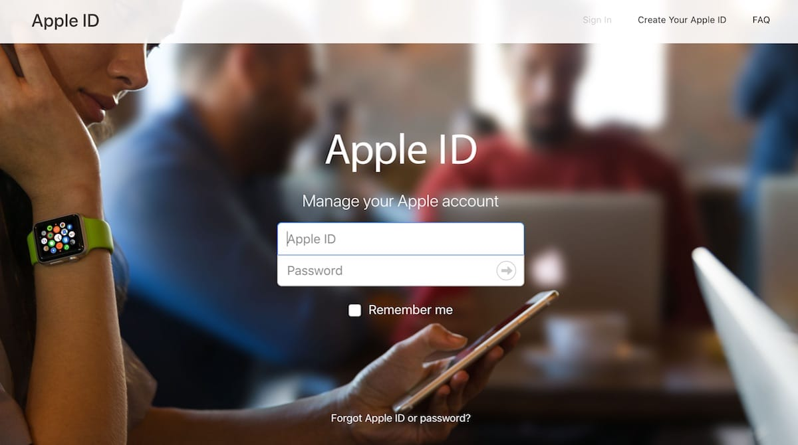
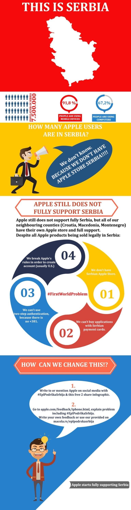

Apple uređaji su najnapredniji i najkvalitetniji uređaji koji danas postoje. Mi poslednjih 30 godina korisnici Apple računara u Srbiji i verujemo da Apple donosi najbolje iskustvo koje korisnik može imati. U svakom trenutku. To je i naša misija.
A vizija je da i Srbija bude u potpunosti podržana od strane Appla.
Borite se sa nama, podelite ovo na socijalnim mrežama:

Prvi Problem:
Korisnici u Srbiji imaju velikih problema sa korišćenjem svojih Apple uređaja. Oni žele da njihov proizvod jednostavno radi (just works), od momenta kupovine do momenta korišćenja. Oni se uzdaju u to da je uređaj potrebno samo uključiti, i da više podešavanja (sem najosnovnijih) neće biti.
Ali, realnost je drugačija. Korisnici u Srbiji, nakon kupovine, imaju sijaset prepreka pre adekvatnog i potpunog korišćenja svojih Apple uređaja. Prvo moraju napraviti Apple nalog (Apple ID). Da bi to uradili moraju u pomoć pozvati svoje prijatelje da im to nameste. Ili kontaktirati kompaniju gde su kupili uređaj (iStyle, Macola, operateri, konkurencija).
Korisnici najčešće kreiraju Američki store iako je to protiv Apple pravila.
Drugi Problem:
Nažalost, nemaju drugu mogućnost. Kada se nalog napravi, počine drugi problem, a to je kupovina aplikacija. Ista nije moguća srpskim karticama. Zato korisnici moraju da kupuju Apple Giftcardove, internet karticama, na inostranim sajtovima. Kako određeni deo korisnika nije upoznat sa ovim načinom kupovine vaučera, u pomoć zove ponovo svoje prijatelje.
Ovlašćeni servisi u Srbiji dobijaju veliki broj poruka i mejlova, i uvek pomažu korisnicima da premoste ove prepreke. Te kodove kasnije moraju da reedemuju (zamene za novac) na svom apple nalogu.
Treći i Četvrti Problem:
Kada je i to završeno mukama nije kraj.
Neke od glavnih opcija nisu dostupne iz razloga nepostojanja Srbije u operativnom sistemu i podršci Appla. Na primer, korisnici ne mogu imati mogućnost iPhoto Family Share opcije, jer se ista koristi samo plaćanjem kartice, a vaučeri nisu omogućeni. Postoji i treći problem, a to je dvostruka autentikacija koja nije moguća, jer ne postoji pozivni broj za Srbiju (+381). A i operativni sistem nije dostupan na srpskom jeziku, što je četvrti problem. Ni Keychain ne radi lako, jer ga je jedino moguće aktivirati aktivacijom sa drugog apple uređaja. iCloud kod nije moguće podesiti iz razloga nepostojanja Srbije sa pozivnim brojem (+381). Sve ovo su poznati problemi, iako se zna da se Apple uređaji prodaju legalno u Srbiji. Potpuno legalno.
Zato smo rešili da pokrenemo kampanju #EplPodrskaSrbija kako bi Apple napokon u potpunosti podržao Srbiju i korisnike koji žive na ovim prostorima. Zahvalni smo Applu na svemu do sada, ali potrebna nam je potpuna podrška.
Pogledajte infografik koji smo pripremili i dajte svoj doprinos tako što ćete zajedno sa nama izvršiti pritisak na Apple. A evo i kako:

-
Feedback
Masovno ostavljanje feedbacka na Apple stranici. Ako se svi udružimo, uspećemo!
-
Hashtag
Pisanje Applu kroz društvene mreže uz upotrebu hashtaga #EplPodrskaSrbija
-
Delite Infografik
I delite ovaj infografik odnosno stranicu, da što više ljudi vidi i učestvuje!
Feedback
Ostavljanje feedbacka na Apple stranici https://www.apple.com/feedback/iphone.html gde će se uneti sledeći tekst.
Kao vrstu feedbacka uneti: Design/Ease of use
Cilj ovoga je da se pošalje što više feedbackova Applu da prosto moraju da pročitaju.
“Dear Apple, we are Apple users from Serbia and we demand you start supporting us. We can legally buy all Apple products (except iWatch), via authorised Apple sellers, but cannot create Serbian app store. Thus are not able to fully use our Apple devices. Customers from Serbia have to break the Apple rules and create U.S. Apple ID and use U.S. app store in order to fully use their Apple products. We demand you create Serbian app store and allow us to use our Serbian payment cards (debit and/or credit). To start supporting Serbia. We want family sharing option. We want two-step authentication. We want Keychain. We want it all.
Hope you will soon realize what Serbian customers mean to you #EplPodrskaSrbija
Thank you and best regards, your Serbian customers”
Hashtag
Pisanje Applu kroz društvene mreže uz upotrebu hashtaga #EplPodrskaSrbija sa navođenjem primera.
“Hey @apple when will #EplPodrskaSrbija? We dont want to wait any more! Serbian customers”.
Podelite sa drugima
I delite ovaj infografik odnosno stranicu, da što više ljudi vidi!
Cilj je što više koristiti navedeni hashtag i pominjanje samog appla.
Molimo Vas da budete ljubazni, da ne koristite ružne reči i budete kulturni. Svi mi volimo Apple i želja nam je da im ukažemo na našu veliku potrebu da potpuno podrže Srbiju.
Uputstvo za kreiranje U.S. Apple IDa
Dok čekamo srpski store, prosleđujemo vam nekoliko članaka koji se bave ovom temom.
Članci su decentralizovani i pisani od strane raznih pojedinaca, korisničkih grupa, kao i lokalnih medija.